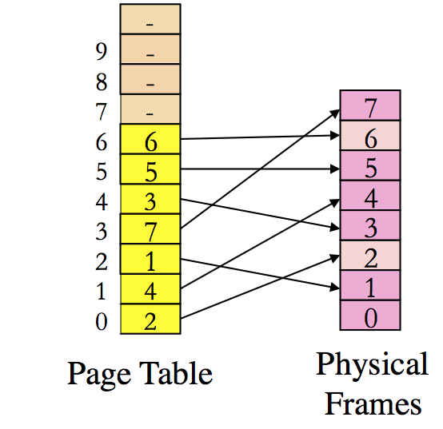

Overview This assignment is related to virutal memory
management inside OS. Although typically an OS can support more than
one process, you only need to handle one process in this
assignment. You will practice the management of page table and
physical memory allocation by emulating what happens inside the OS
kernel. Since we can't operate on real hardware and at the OS level,
this project will design a simulator.
The homework will include three parts with a total of 80 points.
In this assignment, we are considering a tiny computing system with 1K
bytes physical memory, and the virtual address has 12 bits (4096
bytes). Suppose that the size of virtual page/frame is 128 bytes
(i.e., with 7 bits in the address as offset). Before starting
your implementation, thinking about the following questions.
You may only go ahead when you fully understand the answer these
questions. Talk to your classmate or ask help from TA or the
instructor in case you have any confusions.
(1) What is the number of virtual pages for each process? (
Answer: 32 pages )
(2) How many physical pages (or frames) in total? (
Answer: 8 pages )
(3) How many entries in the page table for each process? (
Anwer: 32 entries )
If you can understand all of these questions, now you can proceed to
design a paging system that implements one-level page table. We only
use one-level page table for simplicity.
Part 1: 20 points
This is just to get you started.
Assume that the page table of the process is like the following picture.

Note that only several entries of the process' page table are listed
as we will only use the first 7 entries in Part 1.
Create
a directory called
assign1 for this assignment. Write a main
program called
assign1part1.c for this part. The program will
take only one parameter,
the name of sequence file , which
contains a sequence of logical memory accesses. Here, each logical
addresses is saved as 8 bytes (
unisgned long). Your program
should read and analyze each logical address, and translate it into
the corresponding physical addresses based on the given page table as
shown in the above picture.
Note: to simplify the work in Part 1, you can put the fixed
mapping from page to frame as shown in the figure into an array
before performing any address translation.
The logical memory address is saved in a binary format. To verify that
you can read in the correct sequence of memory accesses, you can first
print out the address that you have analyzed. You can test your
program with the given
simple
test sequence file
(
part1testsequence), where the first address should be
0x0000000000000044 and the second one should be
0x0000000000000224.
You can also refer to the
sample code to analyze the given sequence file.
For each logical address in the sequence file, you will use the above
given simple page table to perform the address translation and
generate a corresponding physical address. You will output the
translated physical address into a new file
called
output-part1test file. This
output-part1test
file should have the similar format as the
given
part1testsequence file as above (i.e.,
each physical
address should use 8 bytes (as an unsigned long value) in the
output file). In this assignment, we save each logical/physical
address as 64 bits (8 bytes) to make the program to be more
general.
Once you test your program with the above simple test sequene, which
contains only 8 memory accesses, and you are sure the program performs correct address translation, you should use the following
sequence file
(
part1sequence) as the input file for the logical address
sequence to generate the translated physical addresses and put them in
another file called
output-part1. Then you can utilize
the
md5sum to compute their corresponding checksum,
and
you only need to write corresponding checksum into
"status.txt" file.
Part 2: 40 points;
In this part, you will be designing the page table and handling the
physical memory management. You will create two new source files in
this part:
phypages.c and
pagetable.c, and a new
main program named as
assign1part2.c, plus any necessary
header files. Here,
phypages.c is used to manage the physical
pages and
pagetable.c will manage the page table for the
process.
For this part, we also assume the same as above: the first physical
frame/page is reserved for the OS, while other pages are freed
initially. You will use a simple physical page allocation initially:
you will allocate the physical page in the order of frame number, starting from 1, 2, 3, .......
If there are some physical pages that are available, you will always allocate from the free list at first.
Once there is no free physical frame, you need to use one of the page
replacement policies to choose a physical frame to free. We will use
the
LRU policy at first, which means the page that is least
recently used (accessed) will be freed at first.
Note that, once a frame is selected to be freed, you need to do two
things:
(1) First, you should change the old entry of page table
so that we don't have two virtual pages pointing to the same physical
frame.
(2) Second, you need to change the entry of target page in the page
table to point to the frame. At the same time, you may also set up the
reverse mapping on the physical page so that we can find the page
table entry when we will assign this frame to other entries.
If a page is just accessed recently, you should update the
corresponding the placement of its physic frame so that this frame
will not be evicted soon (based on the LRU policy).
The input address sequence of the program is the same as in
part
1. Thus, you should be able to utilize the same analyzing function
to get the corresponding virtual address, and then transfer it to a
physical address for each memory access in the file.
In the end, you can use the same function of
part 1 to output
to the translated physical address sequences into a file. For the following input sequence
file
part2sequence, the program
should generate the output file as
output-part2.
Similar to
part 1, you will only need to report the md5sum
checksum for the output file
output-part2. In addition, your
program should count the number of page faults for the given logical
address sequence in the file and the result should be reported in
"status.txt.
Part 3: 20 points. Making your design to be
adaptive to any situation
For this part, we do not assume the size of a page, size of virtual memory,
size of physical memory. You will design a system that can be adaptive to
any situation of these different parameters.
To get the bonus points, you should list whether you have implemented
part 3 in your "status.txt" file. Also, you should briefly explain how
to implement this part in comparison to the first two parts.
You should have a new main program named as
assign1part3.c,
and your program should accept the following parameters:
./assign1 BytesOfPage SizeOfVirtualMemory SizeOfPhysicalMemory SequenceFile
where the first parameter
BytesOfPage specifies the number of
bytes in each physical frame and virtual page. The second
parameter
SizeOfVirtualMemory is the size of virtual memory
in bytes. The third one
SizeOfPhysicalMemory is the size of
physical memory in bytes. The fourth one
SequenceFile is the
name of the file that contains the sequence of memory access logical
addresses that need to be translated.
To test your program's Part 3 functions, you can use the parameters
specified in "Part 2", and your program should generate the same
output file as
output-part2. In the end, give an argument
why you think the implementation is correct.
Submission guideline
You will submit through the blackboard. Please including the "status.txt", and a "source" directory that includes all source code and Makefile.
"source" directory: mandatory
This directory should include all of your source code (*.c, *.h) and Makefile.
Without the soure code, you can only get 50% points of your earned at most.
status.txt: manadatory
You should include a status report in the file
status.txt.
Here, the status report in
status.txt should include whether
you have complete Parts 1 and 2 successfully. If successful, include
the md5sum checksums for each part on the test input sequences. For
Part 2: you should also include the number of page faults for test
sequence. Part 3: please include the
required description for the bonus points. Please also give brief
description of what is working and what progress was made on the part
that is not working.
There will be a severe penalty (50% off) if the "status.txt" is not aligned with your
source code. If there is no "status.txt", you won't get any points.
Please compress all of these files into a
zipped file and name it as "abc123.zip". abc123 should be replaced
with your abcid.